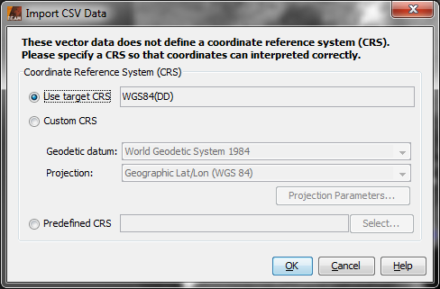
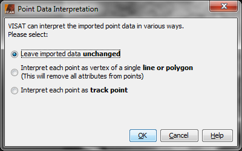

| Import CSV Data | |
You can import any CSV ('Character Separated Value') data given in plain text files. However, to be correctly imported and interpreted by BEAM/Visat, these files need to follow certain rules on content and formatting, as described here. Trying to import CSV files which deviate from these rules may result in unexpected behaviour or error messages.
When importing a CSV text file, you will be asked to define the Coordinate Reference System (CRS) on which the given coordinates are defined.

You can choose between three options to define the CRS:
After the CRS of the CSV data has been selected and confirmed with 'OK', a new dialog 'Point Data Interpretation' is shown. Here it can be selected in which way the given point data in the file shall be interpreted and displayed by BEAM/Visat.

You can choose between the following options:
See more details and examples here.
After the point data interpretation is confirmed with 'OK', the data is displayed in the current view. Also, a new vector data node corresponding to this CSV source is added in the Products View, and a new vector data and mask layer is added in the Layer Manager.